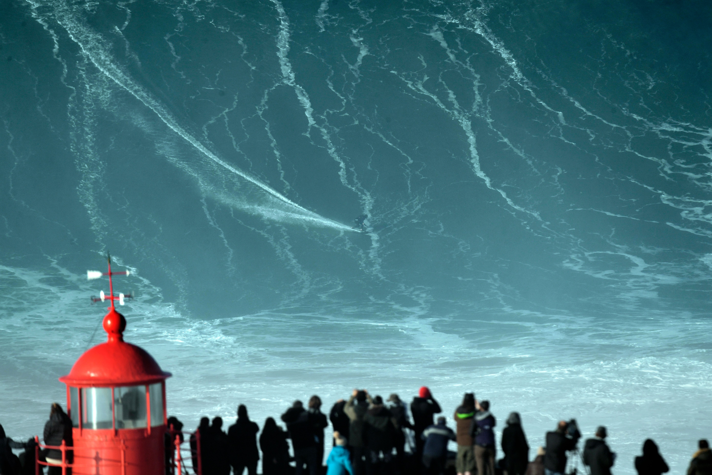
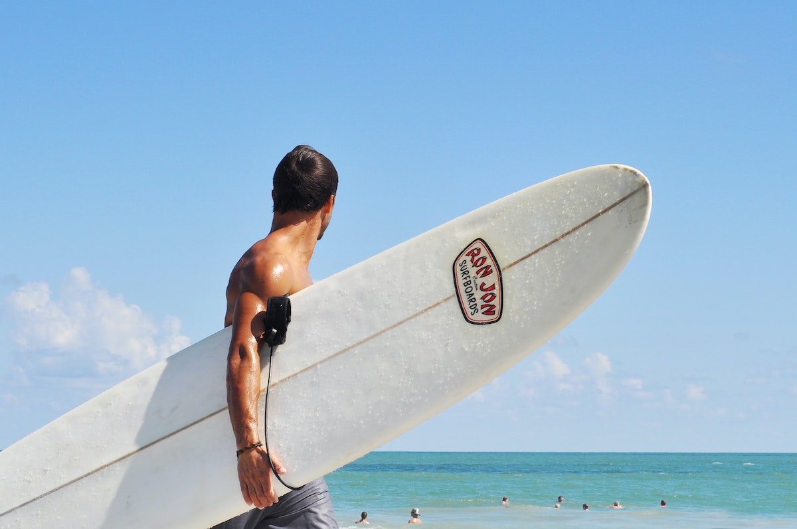

Where Modern Surfing Began
Duke Kahanamoku was a Hawaiian swimmer, Olympic gold medalist, and one of the most important figures in the history of surfing. He helped introduce surfing to the world and became known as the father of modern surfing.

Capturing Kelly Slater Greatest Surfs
Kelly Slater is one of the most successful competitive surfers of all time, known for his powerful style and long career. He has won many world titles and helped push surfing into the modern professional era.

How Gerry Lopez Became a Symbol of Hawaiian Surfing
Gerry Lopez is a legendary surfer known for his smooth, calm style at Pipeline in Hawaii. His graceful approach to dangerous waves earned him the nickname “Mr. Pipeline.”

Inside Surfing’s Most Dangerous Moment
Three-time ASP World Champion Andy Irons grew up on the shallow, hazardous reefs of Kauai and became globally renowned for conquering the world's most dangerous surf.

Do You Have What It Takes to Ride Giants?
German surfer Sebastian Steudtner holds the Guinness World Record for the largest wave ever surfed, riding a massive 86-foot wave at Praia do Norte in Nazaré, Portugal.

How Board Design Changes the Ride
Explore how a surfboard’s shape, length, fins, and materials affect speed, balance, and control. From sharp turns to smooth cruising, every design choice changes the way a surfer's ride.